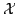
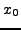
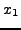
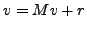

We develop a fast numerical algorithm for large scale zero-sum two player stochastic games with perfect information and mean reward, which combines policy iteration and algebraic multigrid methods.
Consider a finite state space . The stochastic game is played in stages as follows. The initial state  is given and known by the two players. The player who plays first, says MAX, chooses an action in a set of possible actions. Then the second player, called MIN, chooses an action in another set of possible actions. The actions of both players and the current state determine a payment made by MIN to MAX at stage 0 and the probability of the new state . Then the game continue in the same way with state and so on. We call a strategy or policy for a player, a rule which tells him the action to choose in any situation. A Markovian strategy depends only, possibly randomly, on the current state and not on the past history or stage. Each pair of Markovian stationary strategies of the two players determines a Markov chain on . We are studying the value of the game with mean reward which is defined as the mean expected payment per stage, made by MIN to MAX, when each player chooses a strategy maximizing his reward.
The value of the game is solution of a dynamic programing equation. This
nonlinear equation can be solved by the policy iteration algorithm for
zero sum stochastic games of Hoffman and Karp (66) when the Markov
transition matrices of the game are all irreducible. The principle of
this algorithm consists in applying successively the two following steps:
first compute the value of the game with fixed strategy for the first
player and then improve this strategy. The first step is solved applying
the policy iteration for one player games, i.e. stochastic control
problems. Cochet-Terrasson and Gaubert (06) proposed a version of policy
iteration for two player games in the general multichain case, which is
based on the algorithm for multichain Markov decision processes of
Denardo and Fox (68). Each iteration of Dernado and Fox algorithm
requires the computation of stationary probabilities of irreducible
Markov chains and also the solution of linear systems of the type
 where  is a sub-markovian matrix.
is a sub-markovian matrix.
We propose an algorithm based on Cochet-Terrasson and Gaubert policy iteration algorithm where we use multigrid methods for Markov chains of Horton (94) and De Sterck and all (08) to find the stationary probabilities and algebraic multigrid algorithm of Ruge and Stüben (86) for the above linear systems. We present numerical results of this algorithm (implemented in C) for large scale zero-sum two player games.